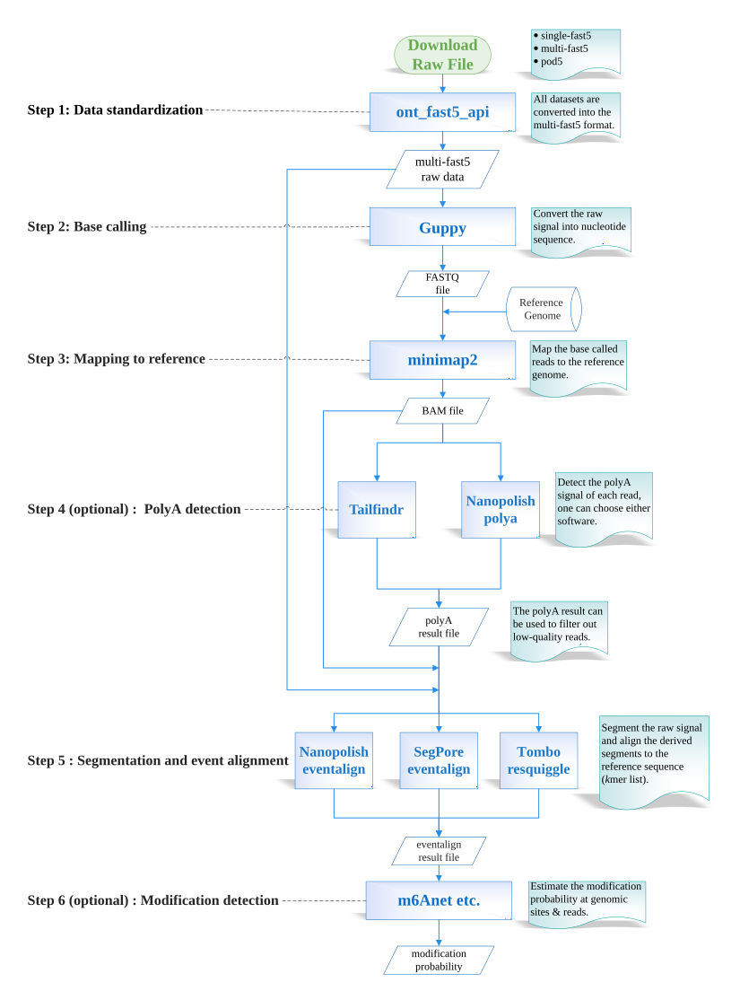

Preprocessing pipeline
Every dataset is re-processed from raw fast5 with the same tools and parameters. The commands below reproduce the pipeline on the 319 MB demo dataset; swap in your own data to extend NanoBaseLib.
Pipeline workflow
Public datasets arrive pre-processed with different basecallers, genome versions and tools, which makes them unfair to compare directly. NanoBaseLib therefore starts from the raw signal and runs one pipeline whose outputs become the inputs of each benchmark task. Each step can be implemented with several tools; the ones we chose follow common practice and double as the baselines in the benchmarks.

Step 0: get the demo dataset
git clone https://github.com/nanobaselib/NanoBaseLib.git
cd NanoBaseLib
curl -L -o demo_dataset.tar.gz "https://zenodo.org/records/10889896/files/demo_dataset.tar.gz?download=1"
tar -xzf demo_dataset.tar.gz # creates demo_dataset/ with 0_reference and 1_raw_signal
cd demo_datasetStep 1: data standardization
Raw data come as single-fast5, multi-fast5 or pod5. Everything is converted to multi-fast5, the format all downstream tools accept. If you want to use Dorado, also produce pod5.
# single-fast5 → multi-fast5 (not needed for the demo dataset)
single_to_multi_fast5 --input_path 1_raw_signal/single_fast5 \
--save_path 1_raw_signal/multi_fast5 \
--filename_base demo --batch_size 4000 --recursive
# multi-fast5 → pod5 (only if Dorado is used)
pod5 convert fast5 1_raw_signal/multi_fast5/*.fast5 \
--output 1_raw_signal/multi_pod5 \
--one-to-one 1_raw_signal/multi_fast5Step 2: base calling
Guppy 6.0.1 (high-accuracy models) is the reference basecaller for all datasets; Dorado is run in addition. Configuration files per chemistry are listed in the base calling benchmark.
guppy_basecaller -c rna_r9.4.1_70bps_hac.cfg --num_callers 20 --cpu_threads_per_caller 20 \
-i 1_raw_signal/multi_fast5 -s 2_base_called/guppy --fast5_out
dorado basecaller rna002_70bps_hac@v3 1_raw_signal/multi_pod5 \
--estimate-poly-a > 2_base_called/dorado/dorado.bamStep 3: mapping to the reference
Reads are indexed for Nanopolish, aligned with minimap2 in map-ont mode, then sorted and filtered (-F 2324 drops unmapped, secondary, supplementary and reverse-strand records for direct RNA).
cd 2_base_called
find guppy -type f -name "*.fastq" -exec cat {} + > demo_dataset.fastq
nanopolish index --directory=../1_raw_signal/multi_fast5 demo_dataset.fastq
minimap2 -ax map-ont --MD -t 8 --secondary=no ../0_reference/ref.fa demo_dataset.fastq \
| samtools sort -o reads-ref.sorted.bam -T reads.tmp
samtools view -b -F 2324 reads-ref.sorted.bam > reads-ref.sorted.filter.bam
samtools index reads-ref.sorted.filter.bam
samtools quickcheck reads-ref.sorted.filter.bam
samtools view -h -o reads-ref.sorted.filter.sam reads-ref.sorted.filter.bamStep 4 (optional): polyA detection
RNA only. Reads without a detectable poly(A) tail are low quality and can be filtered out. NanoBaseLib ships results from both Nanopolish polya and Tailfindr.
nanopolish polya --threads=32 --reads=demo_dataset.fastq --bam=reads-ref.sorted.filter.bam \
--genome=../0_reference/ref.fa > ../4_nanopolish/polya.tsv
grep -E 'PASS|readname' ../4_nanopolish/polya.tsv > ../4_nanopolish/polya-pass-only-with-head.tsvlibrary(tailfindr)
df <- find_tails(fast5_dir = '2_base_called/guppy/workspace',
save_dir = '3_tailfindr',
csv_filename = 'tails.csv',
num_cores = 20)Step 5: segmentation and event alignment
The raw signal is segmented and each segment aligned to a reference k-mer. Three tools are run: Nanopolish eventalign (with --scale-events and --signal-index), Tombo resquiggle (which needs single-fast5 input), and SegPore eventalign.
nanopolish eventalign --reads demo_dataset.fastq \
--bam reads-ref.sorted.filter.bam \
--genome ../0_reference/ref.fa \
--signal-index --scale-events \
--summary ../4_nanopolish/summary.txt \
--threads 32 > ../4_nanopolish/eventalign.txt
cd ..
mkdir -p 5_tombo/single_reads
for i in $(ls 2_base_called/guppy/workspace); do
multi_to_single_fast5 --input_path 2_base_called/guppy/workspace/${i} \
--save_path 5_tombo/single_reads --recursive -t 20
done
tombo resquiggle 5_tombo/single_reads 0_reference/ref.fa --overwrite --processes 20Step 6 (optional): modification detection
Estimates the probability that a nucleotide (or k-mer) at a genomic site is modified. Each tool handles one modification type at a time; see the modification detection benchmark for the tools and how to run them on the eventalign output.
Batch effects and normalization
Sequencing devices are an important source of batch effects. The pipeline mitigates them in two ways: device-specific parameters convert the integer signal to picoamperes, and downstream tools further normalize per read (Tombo: median/MAD; Nanopolish: per-read scaling; SegPore: polyA-based standardization). Details are on the signal processing page.
Processing tools, versions and limitations
| Software | Version | Pipeline step | Function | Limitation |
|---|---|---|---|---|
| ont-fast5-api / pod5 | 4.0.2 | 1 · Standardization | Raw data format conversion (single-fast5, multi-fast5, pod5) | – |
| Bonito | 0.7.3 | 2 · Base calling | Base calling | – |
| Causalcall | - | 2 · Base calling | Base calling | DNA only |
| Dorado | 0.5.3 | 2 · Base calling | Base calling, polyA detection, modification detection | – |
| Guppy | 6.0.1 | 2 · Base calling | Base calling | Requires a free ONT community account to download |
| Rodan | - | 2 · Base calling | Base calling | RNA only |
| bedtools | 2.30.3 | 3 · Mapping | Genomic file format conversion | – |
| minimap2 | 2.24 | 3 · Mapping | Align reads to the reference genome / transcriptome | – |
| samtools / htslib | - | 3 · Mapping | BAM sorting, filtering and indexing | – |
| Nanopolish | 0.14.0 | 4 · PolyA detection | PolyA detection, event alignment, modification detection | – |
| Tailfindr | 1.4 | 4 · PolyA detection | PolyA tail detection and length estimation | – |
| SegPore | 1.0 | 5 · Segmentation & alignment | Event alignment and modification detection | RNA only |
| Tombo | 1.5.1 | 5 · Segmentation & alignment | Re-squiggle (segmentation and alignment), modification detection | – |
| CHEUI | - | 6 · Modification detection | RNA modification detection | m6A and m5C only |
| Epinano | 1.2.0 | 6 · Modification detection | RNA modification detection | – |
| m6Anet | 1.0 | 6 · Modification detection | RNA modification detection | m6A only |
| MINES | - | 6 · Modification detection | RNA modification detection | m6A only |
| Nanom6A | 2.0 | 6 · Modification detection | RNA modification detection | m6A only |
| h5py | 1.8.18 | Utility | Python interface to HDF5 (fast5) files | – |
Guppy and Dorado downloads require a free Oxford Nanopore community account.